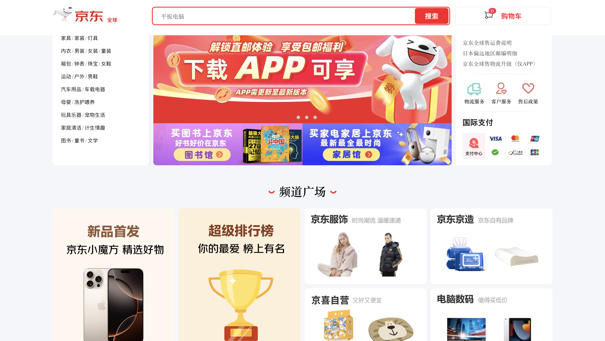

JD.com
Starting as an electronics and home appliance storefront, Liu Qiandong entered the e-commerce space and launched JD.com in 2004. Unlike Alibaba’s marketplace-focused model, JD.com distinguished itself by emphasizing fast delivery and product quality. It offered same-day or next-day delivery in many Tier-1 and Tier-2 cities, supported by a logistics network of more than 1,400 warehouses. This made JD.com a preferred platform for customers buying quality-sensitive products such as premium electronics, appliances, and fresh food.

Beyond its speed and logistics-driven quality control, JD.com also stands out from many other platforms through its first-party B2C model. This means JD.com sells products directly to customers and handles storage, packing, and delivery through its own nationwide logistics network, rather than relying mainly on external merchants.

By prioritizing a premium supply chain, JD.com maintains consistent delivery speeds and better control over product quality. This raised the standard for logistics in China’s e-commerce, where speed, reliability, and product quality became important parts of the shopping experience.